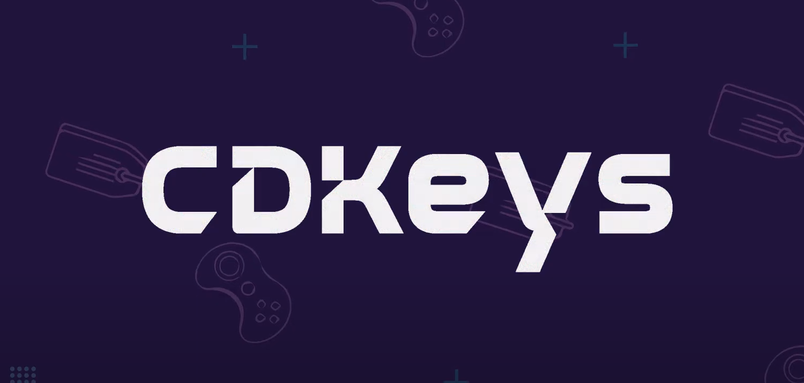

سی دی کی اشتراکی چیست؟

امسال قراره کلی بازی خفن و جذاب برای کامپیوتر منتشر بشه و ما گیمرا قراره خیلی بهمون خوش بگذره . اما یه مشکلی برای ما گیمرای ایرانی هست که فکر کنم همتون بدونید . قیمت بازی ها خیلی بالا رفته و خریدن بازی اورجینال برای خیلیامون یه آرزو شده ، بازیا هم از قفل های قدرتمند مثل دنوو استفاده می کنن که دیگه مثل قبلنا راحت کرک نمیشن و کرکشون ممکنه چند سال طول بکشه که خب دیگه به درد ما نمیخوره. خب یعنی الان ما باید قید بازی کردن رو بزنیم؟ صد در صد که نه چون فروشگاه دنیای سی دی کی اومده و این مشکل رو حل کرده و کاری کرده که ما گیمرا بتونیم بازی رو حتی از روز انتشار بازی به راحتی تجربه کنیم. هیجان زده شدید نه؟ . دنیای سی دی کی ، از روشی استفاده می کنه که اسمش سی دی کی اشتراکی (اکانت اشتراکی) هست.
خب حالا این سی دی کی اشتراکی چی هست؟
سی دی کی اشتراکی در حقیقت به صورت یک اکانت هست که ما بازی رو به صورت سی دی کی اورجینال روی اون خریداری کردیم و اون بازی خریداری شده روی بین تعداد مشخصی به اشتراک میزاریم . همونطور که گفته شد ما در فروشگاه دنیای سی دی کی با اولویت قرار دادن امنیت شما کاربران عزیز بازی ها رو به صورت کاملا قانونی و اورجینال خریداری و تهیه می کنیم و مراحل کاملا قانونی پیش میره و در نتیجه استفاده از سی دی کی اشتراکی هیچگونه خطری برای بازی های دیگه تون که به صورت آنلاین بازی می کنید نداره و براحتی در کنار اونا می تونید از سی دی کی اشتراکی هم استفاده کنید البته باید بعد از خرید موقع فعالسازی به پشتیبانی سایت اطلاع بدید که بازی آنلاین انجام می دید.
چرا سی دی کی اشتراکی؟
راه حل دیگه برای تجربه بازی ها بدون خرید اونها ، استفاده از کرک بازی هاست در صورتی که کرک بازی غیر قانونی و خلاف قوانین بازی سازهاست و می تونه به بازی های آنلاین شما هم آسیب بزنه و بعضا باعث بن شدنتون در اونها بشه درضمن فایل های کرکی ممکنه حامل ویروس ها و بدافزار های مختلفی باشند که به سیستم شما آسیب بزنن همینطور با گسترش تکنولوژی های محافظتی مختلف مثل قفل دنوو ، مدت زمان کرک شدن بازی ها زیاد شده و حتی بعضی از بازی ها حتی با گذشت سال ها از انتشارشون هنوز کرک نشدن.
در مقابل روش سی دی کی اشتراکی هست که می تونید بازی مورد علاقه تون رو با قیمت خیلی بهتر و مناست تر از قیمت بازی اورجینال تهیه کنید که به عنوان کم هزینه ترین ، ایمن ترین و سریعترین راه برای تجربه بازی های روز دنیاست که شما می تونید بازی ها رو حتی در روز عرضه جهانی اونها تجربه کنید.